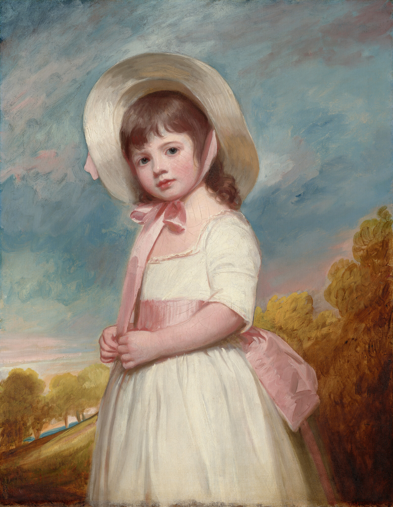
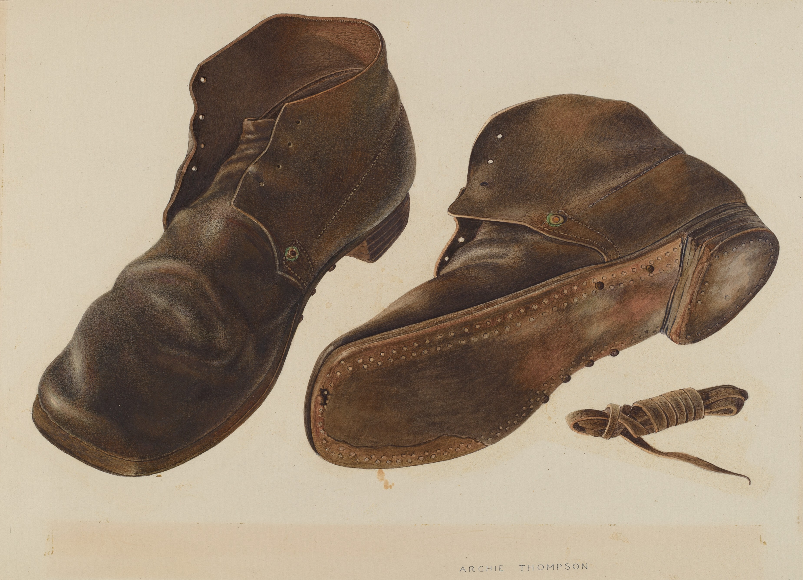
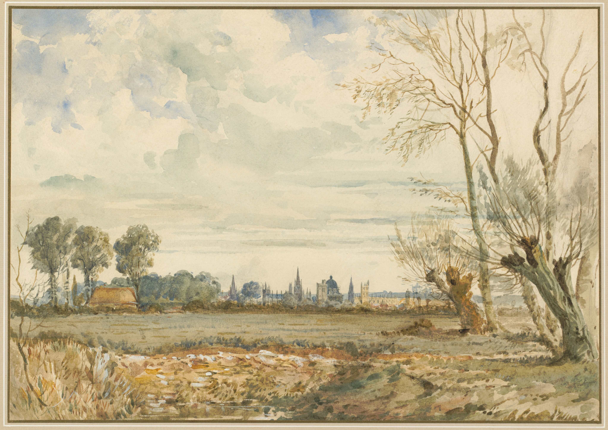

TITLE 73
Todo fue cuando viaje a la casa de Neruda con mi libro,
-El que me mando a dejar mi Padre, -Queridísimo,
--Fuese a París a parar los azúcares. -Santa
---Ya te digo yo que pensé que era día por la noche.
--Entiendan, aquí los teoremas pueden ser económicos,
-Amigos míos -que alguien me cuente un poco más,
--¿Qué más hablaron? -¿Qué conservaron el uno del otro?
---Por las playas jugando --Gentes partidos mirando.
----Salipicados a todo el mundo.
-----Pero no nos rendimos nunca -Tenemos que hablar.
----No sé, Ya lo dije, -Todo -Nada.
-Oh! Aceites Fugadores Partidos.
--Yo lo escuché por la radio de los sonidos que viajan.
---Y ya van llegando a su fin -Que alguien se de un paseo. -Por favor!!
---Otra chilena, una vuelta al mundo desde los corners
-Ah! Astonishing Sir.
--Ideas from ideals identities,
---Aquí nadie pierde,
----Son sólo números namoros nemesis -Tesis Tesla I.
-Subercaseaux pinta que pinto todo -Pintamos,
--Desde los treiles hasta los trailers,
---Oh! El humano de las manos extendidas,
----Tienden las ropas y tienen coherencia -Tes contra los bueyes.
-Las garrochas no se rompieron y seguimos sr/s.
--Las carretas están llenas por las aguas que alimentan
---Y mi cuerpo tiene sed como de volver a vivir -Vivo.
----Where you go with such a hurry speeding the way?!
-No sé, -Ya lo dije todo, --Frenos que acelero.
--Y los bovinos y ruedas por los humos que nos nutren.
---Honorables estatutos por actualizar -Up to date.
----Quality people. -Cuáles quiénes y cuántos al futuro.
-Sí, am/s
--Necesito nuevas llaves,
---Y todo lo que tenga que ver,
----Agáchese y mire por un ojo.
Ah! Los explorador/s magnos -Todos.
-OMENTE & OCOFRES
TITLE 74

This is for those who see beyond,
For those who do not know at all,
For those who tried and try,
For those who achieve it and not.
For those who want to be different,
For those who are nonexistent,
For those who dear to believe,
Forward seeking deep even when steep.
-For those who open new shores,
--For those who travel a lot,
---For those who cannot sleep.
----Thought you know they exist.
-This is from the source,
For those who scrutiny and are,
Men and Women's Child and Grand's
Because they are who we are and will.
-All in,
-Ladies and gentleman's
--Love loops looking for lockey.
---Harvest fruits from the tree falling soft.
TITLE 75
We know it would be nice,
And we do not know why,
We think it is our mind and walk!! Alone!,
By the never ending world!
Wave Goodbye to the unknowns!
Let's see the ElePhant! In the Room,
-Waiting waiting for you! Oh! No!
--We were close enough to watch! Oh! Yeah!
-And the drums dramatic were,
--Art Science Engineering Physics to the stars
---Not need to think twice anymore!
----Oh! Why not!
-----Let's win the race Oh! Yeah! Oh! No! By far.
------Running closed the paradise!!! Park Out Side!.
-And it would be so Nice,
--Just we do not know why,
---Perhaps it is just our mind,
Oh! Yes Oh! Truth by the never ending world!
-Wave hello from wave goodbye
...
......
.........
............
TITLE 76
Los reyes que me invitaron a su casa,
-Balbuinos de los colores BlueYellowblack,
--Y, y me dieron un pedazo de tierra y ahí me senté,
---Comí y comí hasta no dar más.
----Tenían ultra pasillos e infinitos los Laberintos.
---Y las piedras pintadas nos observaban
--Todas las mañanas y hasta que nos dormíamos.
-El rey y la reina.
-----Se reían desde los bastones dorados.
----Descabellados eran sus marcos.
---Y, y aunque no los saludé nunca,
--Ellos me saludaron.
-Y construyeron una foto,
--Y por éstas podrías caminar.
---Y eran bélicos the books from the shelf.
----Brilliant minds from Brussels.
-Facto.
--Tritonio,
---Tres montes topology,
----?¿?¿?¿ Dónde.
TITLE 77
Ya sabemos lo de las banderas en el corazón,
-Con horas de diferencia fui presidente de los Estados Unidos y de otro país.
--Es lo más BlackWhite que se me pudo haber ocurrido.
---El sillón estaba que chocaba con la mesa y yo salté.
----Y los chinoks ya querían volar,
---La prensa pensó y yo dejé de sentirme bien.
-Inmediatamente!!!
--Fue un movimiento --armónico--
-O se rompían o se afirmaban.
Lazos contra las estrellas y atrapamos una.
-Felices saltando todos juntos.
--Azul azul el cielo.
---¿Y el vicepresidente quién era?
--Ya lo dije, -¿Quién lo recuerda? Sr/s
-Switzerland land.
--Y nos queremos tanto!!!
---Ya, para mis amigos,
----Los de siempre --Lord McQueen. -Tremendo.
-Limousine,
--Blindad/s de puertas negras,
---OVAMOS & PARTNERS
----Desde siempre. -----Internet salvar la colisión!
TITLE 78
La depresión intermedia tiene de todo
-Que alguien tome responsabilidad,
--Magnificent magazines from the mountains,
---Beautiful places we have inside.
-And we do not know where they are!
--Por las tormentas llegando!!!
---Que alguien fotografíe la geografía --Fotos reales.
----Me quedo sin aire! Me quedo sin almorzar!
-----Habiendo comido de todo,
------Las energías no son renovables! O sí -No sé,
-Tengo hambre de nada -Estoy lleno,
--Los cascos se me derriten -Me irritan las moscas.
---Comienzo a recordar las safradas con los tarros.
----Estoy bien pero estoy mal.
-Estoy desaparecido con los mil señores, de noche.
--No es noche buena ni mala -Nada -Todo.
---Mis pies sobre la arena soleada,
----Y, y no encuentro la sombra ni el agua -Ni a nadie!
------Los enchufes no funcionan, las baterías no cargan.
-----La nieve no me congela -Y, y yo la quería conocer.
----A penas reconozco la esquina.
---Los números los números! Los títulos por favor!!
--Ya,
-Estamos,
---Quedamos bien,
----No sé, Not life Not nothing Not mentions.
-Nevertheless thanks to whoever read the avalanche.
-----Deep terrains from the terrace. Comprehension.
-.........
--Las linfas se me desahucian.
---Me apremian los intrincados desde las graderías.
----No soy ningún versado,
-Y, y mi mayor logro fue ...
-Desde la nada -Todo. OVERSOS & OFAMILY.
Solemne comedia de soliloquios -En todos hay.
TITLE 79
La Michelle de los seguros
Mucho cuidado sr/s con los phising smishing ransom etc.
--Las random de las llamadas y todo rápido.
---Dígame usted en qué negocio estamos,
----Pienso en resolver problemas,
---Pienso en pescar a todos los que piquen.
--De las cañas no se escapan los pescados!!
-There's a kind of dogs who seek everywhere!
-Palos sobre los ríos y rocas sobre los palos.
--Y vamos lanzado que nadie se cansa.
---El Gmail está lleno y los sauces lloran y lloran,
----Los pescadores se ríen sobre los sauces.
Ah! Si los anzuelos se enganchan nadie sabe que pasa!
-Los kias escapan del caos -Que no escapen!
--Cristal clear from mistral Jensen de las sequoias.
-Oh! Alcas sobre las GPUS y ya no las explota nadie.
---Encryption account from wallets and protocols out!
----OSECURE & INNVATION
-----Claves claves valores claves valor out as well!
------Hack everyone or hack none
--Factories of entities
-Check-in and out -out from inside outsiders insiders.
-¿Quién las quiere solucionar?
--Pienso pienso que guardas mucho.
---Pienso pienso que eres lento -rápido
----Pienso pienso paralelismos, raw columns out!
¿Quién? -Pronto -¿Cuándo? ¿Ayer? ¿Seguros?
TITLE 80
La mínima abstracción del poder máximo,
¿Quién es?
¿Y cuál es su propósito?
¿Y cuál es su herramienta clave?
Resultantes escalares de abstracción
-No sé, -Yo, ya no recuerdo nada.
--Y ¿porqué fueron y no serán y ya no son pero existen? --¿Porqué piensan?
---Está más que claro desde la oscuridad -Literalmente.
-Yo no fui, Yo no sé y no voy.
¿Porqué pensar lo que pensamos y más?
----Nobody knows, Abstractos de la máquina de letras.
---Y ¿Cuáles son las características del pensar?
--Misunderstood by the sounds -Misunderstood by the language, by the components itself -definition.
-Somebody did not hit the hits, Who hits?
-And is giving us the fundamental probabilistic abstraction in the realm of systems systematically and is not a person but a part of ours
----Guess guessing.
--Is a living 'persona' recursively attached to our mind, body and heart.
---Meaning
----I cannot describe -precisely Sr/s.
-----And not, I am not crazy yet! are we?
------Hopefully
----1, 2, 3, 4, 5, 6, 7, 8, 9, 0, 1
---The less abstractional and most abstractional are the same.
--If the conjecture is true and we cannot go beyond or touch such 'persona'
-I do not know where are we going with the repeated more abstractional -Expectrus in the middle, of our current AI systems,
-We are stuck at the same abs. bar intellectually, -Interesting for most and not enough
-For advancing scientific discovery.
--Patterns do not help. -Patterns are useful.
---I am not going to touch consciousness.
----I will not take account states of the quantum. -How.
--Classical modern systems -Useful til now.
-How such components would work at the most precise level?
With abstractional tools and more abstractional foundations.
-----Nothing new.
--We have a 'persona' fundamentally all over our bodies -different 'personas' entities -eating sleeping knowing acting hearing feeling molding.
-one or the other with different characteristics
--And more nuance and not discovered laws of physics and wisdom.
---Personas over personas over entities of personas.
Who are the confabulators and who is not?. OFF ON.
--Magazine magic magnetic magno!
-Hints not facts -hints. -Nothing serious here.
--Interesting Mr.
-REFINAR- go sleep!. WAVES.
And why?
And how?
And now?
And future?
From always?
TITLE 81
Detrás del castillo puedes ver los rudimentos,
Delante de los árboles puedes ver las hojas,
--Y observar las matizadas de maderas intricadas.
---Puedes ver el río que nos separa de todo -Nada.
-Puedes oír las corrientes de desde la ciudadanía,
--Tal vez hoy recorrí los alerces las rayenes los avellanos,
---Tal vez pase por la casa de los osos.
----Risitas de l/s niñ/s
-----Tal vez fueron los gatos sobre el aluminio,
-O los perros sobre las personas. -Tránsito.
--Tal vez sólo fueron las familias al despertar,
---No sé, --Tal vez sólo fue la junta de vecinos.
-Tapas sobre los castillos y es de noche de mañana.
-----Oh! ¿Qué aromos son estos?
------Que reflejos de lejos desde lujos.
-------Sí, las manos las manos! La cara. Las pestañas.
-No sé, No pestañear los bueyes.
----Carretas que nadan caminando -Ripios de ripios sobre la tierra y aún es falto.
-Sombra de sombreros y es asoleado -Rumas de leña.
---Metros de cuadrados por las cuadras,
----Arm over the shoulders and are burning Oh!
---Cuándo quiénes dónde ¿?
-Pasto sobre las aguas,
--Escobillones Descabellados,
---Ercilla pronto a la escuela y miré y caminé hacia Schmidt
----Professor Hubberd and Harvard were not seated,
-----Was a boy,
--And everybody speed up because they are at the point.
-Bathroom front door back from the exit.
TITLE 82
El taco que salió caminando,
Dos fueron los tacos -Y, al otro ¿Qué le pasó?
No sé, ---Se lo comieron los vehículos.
Ah! -Bueno, Y, ¿De quién eran los tacos? ---Niña.
-Y eran grandes grandes altos altos Y, -Los taquitos.
--Uno se fue por izquierda y otro por la derecha,
---De ida y de vuelta, Oh! La niña que sueña.
----Y los moños desaparecieron Y los coles.
-La falda los pantalones y las poleras de los chalecos,
------Todo voló por los aires,
----Del Paraguas se afirmó la niña y ahora volando va
---Sus ojos blancos azules negros cafés marrones.
-Cuídate niña hermosa!
--No soy la niña, ni el niño.
---No soy el papá ni la mamá,
----Ningún relativo.
--Y no soy ser vivo pero siempre vivo.
---Ya lo dije, -Todo.
-Watson Witness without waiting.
------No soy los deseos -Y veo veo muy bien.
¿?....
------Todos pueden adivinar,
--Lavocar del servicio medico legal,
-Rockstar desde los pedidos que van.
--------Swift and cascade yaris tucson. -SweatBit.
TITLE 83
El toro que se volvió a las flores.
Aquí están los mejores y causan temblores ----Niños.
Y los cachos salieron galopando -¿Cómo?
Sí, y el letrero de Lutero con su caballo -Caballeros.
----Cuidado cuidado señores leer las reglas y todo muy bien.
---Yo no las dejé en la puerta por mi parecer.
--Oh! Afirma afirma muy bien!!!
-Porche Lamborghini aventador tiburón tiburón.
-----Ah! El niño que sueña -Audi desde la clínica.
----Mios no son. --¿Cómo que no?
---Plataformas suenan y suenan por las pelotas.
--Coches chocas y choco desde la pediatría.
------Ya lo dije -Todo.
-----A velocidad máxima -No.
----Ni la niña ni los zapatos o el cinturón,
-Me estaciono muy bien y los partes que voy.
---Queens no soy,
--Tengo vidas y no voy viv/
-----Desde las u's.
-Antoinette the billing net.
--Maximum speed from the corvette.
---BMV KGB -No sé,
---Ivannov von kross. Krees de té. Even more.
TITLE 84
Hola ¿Cómo podemos ayudarte?
-No sé, --No quiero al doctor y me enojé
--Yo no sé, Por éste costado ya estoy recostad/
---Adas y ados eco amigables amables de sable.
-Oh! -Los dientes que vuelan, -No sé.
--Son blancos y no son de leche -Y yo los quiero tanto!!
---Stray forward from smartmedical heart -Colorful
Ah! Great people to start stars from Mars,
----Guards from camaro white white -Wow!
---Celestial Girls and boys -In and out -Two lines.
--Again El alemán.
-Babies Linde Tatas Mix -Bocinas no tocar!!!
------No fumar ni tomar sr/s.
-------Sin llorar Galen de galanes D-Max.
OK, grand spark REXTON from berlingo.
---Duster platinum parking Women's and man's.
----Deustche schule del Carmen carnival Houghton.
-Our friend hoschstetter from Zurich highlights.
--7 the lines and box phones up and down from geminis town.
----10 the lines and carreras de campos, Brand! Y saltos.
---Te dominó el sombrero trabajando desde el estudio.
-----Jumbo jumbo Cajones de Perrysburg ver.
----Bajando subiendo las Mercedes de Mr. Benz.
---Oh! THE HUMANKIND,
--For the greatest benefit of all.
-Theirs souls theresvan from time to time.
--Ah! Interestecarr -Ladies and gentleman's!!!
----Meridos y meridas, Me fascina todo
-Desde la nada.
------Buenas ideas variantes de Memphis --Mangos!!!
Magnos y magnas menos y más,
---Portal de portales becker mortales.
-----Desde el hogar de hogares crugen Terrassas.
Condelling waking up conDominio desde el Tomas.
----STOP,
---No puedo!
--No más.
-MadMax del Alberto Prieto las cletas.
Pasteles de stanley -No puedo. Nosotros no!
--Oh! Ah! Y, y vivimos juntos tan rápido!
----Humans humans cecrea cereales cuadrados!.
POPCORN montt semillas de zapallos select/s.
Angels angels! Desde TEMUCO Cervantes -...
2 the lines.
When the daylight fall and the dreams are drowning down.
--Come back to your town from the ground up -1.
TITLE 85

Sahuesos desde los huesillos,
Desde el Himalaya el Ñielol me exclama
Caravella de coker almendras cream de los tostados.
--Choco-cholito mochilas y bolsos centell/s.
El cuerpo humano de la columna vertebral!!
-Imagen referencial,
Cranberry del dátil! Seguro laboral! Piña pistach/
---The quinoa real y los huesillos todavía más grandes.
----Maravillas del gluten -----No tocar.
------Sellados de las advertencias sr/s.
-------Mega danky de papandbilz -Crocanty.
---Trensitos de tutifrutti kitkat from shanne-Luz.
--Colonias de jengibre pomelo goji del hibiscus.
Castañ/s de guindas desde los kiwis sostenme!
----Te tengo. -Tango.
---Pisando las lomas coloradas -Entrégame de inmediato.
-Por los baúles cargando! -Los robles observando.
Oh! Montt edifica las almas urbanas -Hum!
--Y los algodones de manzana desde Tribeca.
Blanca las nieves -Prohibido correr!! GILDMMEISTER.
-Químicos recargables por los anillos!
------Transpórtame bien desde el ministerio.
Ok,
¿De quién para quién?
-¿Para qué?
----¿Por dónde?
TITLE 86
The summer austral,
The persa montt van.
The house from Hernam,
Ufros from Germaine
AIES Mayor Can.
Let's go to the starts
Let's sing far from the bars!
Let's change what we can
Street's alone do not walk --All together.
-Morning day and night!
We are safe and sound
We are grape and wine
We are the Humankind!
Let's look at the eyes,
Let's live the Saturn life,
Let's make the mountains smile,
Let's speed up the mind from the master mind.
The summer austral
The winter blind,
Autumn Spring in our hearts
From the running wild
From the working hard
From the souls we have
Since the beginning skies×3
TITLE 87

Complot de Simond sobre el zafiro Gross.
----Soñaba con mi corazón a 3rev/sec,
-Observé por dentro sus abublinados sistemas.
-----Cuando me dijeron que desperté,
-La lluvia caía con amor sobre la cama de oxígeno.
--Y no era oxigenada y yo seguía mirando el cielo,
---Fue cuando unas gotas me dieron en el ojo orejas y Aah!
----No me dejaron verlo -No era descriptible,
-----Y estaba limpio del barro de las 100 mil gotas,
------Los truenos saltando por los troncos,
-La epístola de todo los días,
---Coacción aspecto ánfora y agudo fósil bullicioso,
--------Excuse moai
----Concierto de condolencias del alud alzado.
---Derrumbando con cuidado la materia.
--Oh! Estaba por todo el humano.
------Inhumano lo que hace y el tiempo no le conoce.
-Dónde quién.
¿?
------Todo -Nada
-From the Wright brothers handshake,
--------How such a possible work?
-...
TITLE 88
Desde el río todo es sin sonido,
-Desde la península, peces -En silencio,
--Desde los cerros los Pastores -En silencio,
---De desde los árboles no hay hoja alguna.
-----El silencio reina desde la arena -Piedras.
------Cantantes de canarias sobre las ondas,
----Luces del brillo humano -Todo
---El aire en silencio, la gravedad y el tiempo.
--Todos enmudecer -Noche -Día
-Diantre de las últimas que llegan -Teorías.
-----El río se ríe del silencio,
---Y los rombos del polígono exagonal -Exagera.
-Río rio.
-------Rey no me hables ni embolines,
------Quiero ver y entender,
-----Te quiero bien cerca desde lejos.
----Oh! La lluvia el calor y el frío.
-Nadie quiere hablar u oír, -Me río rio,
--Sobre treiles y sobre las tuercas Turquía,
----------Sobre las copas debajo del agua -Presión,
--------Profundidades del denso de la danza del sonido y del silencio -Dama y barón.
Sobre nidos de niñ/s de la cilindrada,
-En guerra toman nuevas tierras.
--Y alguien entona alegría,
---Alguien la melancolía,
----Apagan las luces desde las puertas,
Diamantes de águilas y ciervos,
------De bramidos de laringe desde el que reina.
--Oh vanaireswiss coinlab from Isabellvon Break.
-------Debajo del techo de las familias.
-----Sobre platos no hay pescado que nade.
----Desde el reino del estómago -Llenno de vacío.
-fffoooo! Aliento de Schrodinger,
----Del fridge que deseo -¿A quién vemos?
---El silencio me congela del calor! Ffoooo!
-Bioctogonal desde el penthouse Hometown -Sueño.
-Manos sobre el cuello y remedios -Nada.
--Ffooo!
--------Táctica de los tácitos de las tazas de antar.
----Flower bloom from the skin scan and aviator.
-Ffooo!
Ya parecía languidecer el humano lenguaje
----Promedio unas limas de buenos aires hasta paulo -Calambres.
-------Leaders of knowledge -Ole!!
FFFOOOO!
Flotan mis pies sobre el mar de los zapatos y camino.
Y siguen rotos,
--Y continuo y vamos y Fffooo! -Puertas Aahh!.
TITLE 89

El data del editor en corbata,
-El espectador de primera persona,
---Se asoma y no mira,
----Se desmaya y habla.
-Se viste de luz y se apaga,
--Canta y no suena,
---Salta y no es alto
----Alumbra y se oculta.
-----¿De quién hablas?
------¿Y quién tiene corbata?
-------¿Y tiene camisa?
--------No sé, Le converso y se conserva.
-----Natural reservations atention planchas -Enchufes.
----No me detengas,
---Este tema data de años,
--¿Y quién lustra los zapatos?!!
--------Carca la moneda sobre la hoja
-------Y no son dos monedas -Tema serio.
------No soy impresora de papel -Apenas tinto.
-----Y todo desde el proyector -Caras números y letras.
-Amigos del intelecto -Nos falta educación.
------Sobre este proyecto -¿Quién pregunta?.
-----Afecta la visión,
----La misión de la máquina de munición. Oh! -Eso es.
-Dormilón!
--Ah!
----Portadas de papeles cortados! ×
---------Muerde la moneda.
--------Rescata un pedazo y plástico por la plaza.
-No sé, Tengo sed.
----------Agua sobre la plancha y sigue funcionando!
-Teóricos del ayer por hoy -Sueño mañana.
--Y soñando no estoy. -Juntos vamos,
---Botes de barco avionetas de viento,
----Y somos todos por los vientos.
No me aventes que nadie me recoge.
No me rompas que nadie me conoce,
No me rayes que nadie me quiere,
No me desgastes que no tengo mucho.
¿?
TITLE 90

Las ediciones son,
Las audiciones ver,
Los audios del querer,
Sueño con conocer,
Sueño con mañana y ayer,
Las ediciones no son,
Las audiciones no ver,
Los audios del no querer,
Los sueños no conocer,
Hoy y por doquier
Sueño con tener,
Mañana una vez,
Un atardecer en un amanecer
Dolores del sol,
Auroras querer,
Rejuvenecer
Vamos a crecer,
Vamos a leer,
Vamos a vivir y reír
Dolores del sol,
Auroras querer,
Diamantes ser o no ser×3
TITLE 91
Dim ker dim coker,
Integral gold from eden,
Chains of the chains
Sigma from LaPlace,
Partial we derivate!
Let's see how we can
Multiple the summer by ten,
Let's set the sunset on set
Let's win to schrodinger,
Let's shake the status qua,
Let's dream about how we can
Solve the great stokes theorem!
Gauss-Bonnet as well
Heidenberg to lorenz,
Aharonov-Bhom effect
Super everywhere,
Black hole to the x,
Jones comes and something get.
Maxwell a zero cannot
Zzz the function control
Feynman do not joke!
Let Newton dissappear
Mr. Yang Mr. Mills
Do no forget Baxter hills
The field theory
On fire alone
Babylonians to the platonic sounds
Tables index and more,
Tables index singing the song,
Tables index ringing the tone...
TITLE 92
¿Porqué continuas ladrando?
Arados contra labranza!
Y son productos del campo,
Y labrados de los labradores -Sr/s.
O buscas compras que salen,
O combos sobre la hiel de los hierros,
Y todos dejan de ladrar muy cerca,
OSELVA & OSELMAN
TITLE 93
L/s niñ/s que rompieron el vidrio,
-Se ríen de las lágrimas del miedo,
----Los vidrios tristes en trozos,
------Papa! -no me acuses -No les causes mas risas
---¿Y quién lo rompió?
--Fue la piedra fue la botella -No sé -La pelota.
-¿Y qué es lo que se cliso?
------Fueron los Picassos -¿Quién?
-------Yo salí corriendo! -¿Quién lo vio?
------¿Quién lo autorizó?
-----Tu corriendo yo corriendo las manos por las puertas.
----Aah! La lluvia -Me requiebra las heridas
-Oohh! Las gotas por l/s gat/s los pájaros que miran
-Todo -Nada.
-----------No me parches ni recojas
----------Solo renuévame -Sí
---------De nuevo l/s niñ/s -Años pasar.
-Posas de cristal.
?¿
TITLE 94
Al final no resta nada,
Es un equilibium nanométrico,
Una semana acábese todo,
La academia Ford esta terminada.
Según cuentan por ahí
Mellon Carnegie,
Esto es un juego de juegos,
Sin finales.
Edison
No está dispuesto a mucho,
Tesla, sólo lo recuerda su torre,
Finales de finales mas tropeles.
Al final nada resta,
Es que claro, todo suma,
Morgan bien lo sabe,
Heidegger no opina.
TITLE 95
Debajo del árbol un equilibrio térmico,
Sobre las aguas una paleta de nubes,
A través del árbol un paisaje,
Y llovía soleadamente!
From Stockholm we are not
From Maldives we do not know,
From Leviu analysis of the cartoon,
We are learning to drive -drove drop from above.
-Abroad
--broad the boathouse.
---Breath the maneuver.
----Above under in spite of all.
-Fine the luxe Gral. Graham
-The road reigns -road happiness -Ring of the rings.
-- OPORTS & SOLDIERS
Y las trincheras de cascos casquillos,
-Apunta muy bien,
--Los bombones que vienen,
---Y nadie quiere asomar los ojos.
--Sub Gral. Babage do not get mad!
---We are on time -the man machine is in his way!
----Entendido Sargento Wisks -Cuidado a los pedales
-----Las cadenas! -Y que el teléfono llame al pelotón.
-Por las insignias volando!
--Afirma el casco de Rayan y veámonos en el banco,
---No podemos salir!
----Cuidado con las minas -Caballeros -Los caballos
-----A las casas a las casas escuadrón! -No quiero sumas!
-Por abajo,
--Por los suministros,
---Por los presentes,
----By Soldier 943256. Oh! Astonishing!
Mi casco mi casco!!!
--El **** del helicóptero -que alguien cubra el perímetro!
Mi placa no me la quitan!
Y mi nombre y mi nombre!!!
--CebraSafe! -Decirle a pagoda que alumbre
¿?
TITLE 96
Guarda las placas CebraSafe -Pium plac plom,
-Mavichks --Cubre el flanco derecho,
--John por las lienzas de desde los ojos
---Signos de PARE -y seguimos transitando -Moviéndose
-No miren el piso! --No miren el cielo ---El enemigo!!
--Por los nombres volando! CebraSafe!
---Mavichks!
----Peter por las llamas! Rescatanos de esta!
------Olvídate de las de plata
-----Hechando humos.
----Nadie Alumbra -Trotando -Skies -Ski -Spies.
---No menciones a víctor nada.
--By Soldier 1034142
¿?¿ Cuándo dónde para qué
----No hables mucho -Esto es peligroso.
---Saliendo por la casa negra de las alfombras doradas
--Sonrisas a los flashbacks,
-Y no somos nada -Todo.
---Humano
TITLE 97
Aahh! Mis costillas! -Desde el alma
Y mis rodillas -Aahh! -Después de unas horas,
--Por querer dormir en el piso el caballo me aplastó,
---Así fue Sr/s -Casi no me levanto,
----Y no estaba de jinete -ni de pastor o paseando,
---Mi cabeza estaba humeando y el cerebelo up and down.
--Virtualmente intensificando,
-El modelo generando nubes -Sin prompts
----Sin resumen sin time or space complexity -A ton
No era texto --overflowing or head
--Retrieval vector generation -Maybe mabeline bank,
Specialist of back to back and front side to side -Ring,
------The natural monopoly of the interface
Oh! How could be made? Inference state dominate
And who govern the physical net?
----Distribution the phase -Not to mention --Impressed
---A glimpse on the management step-by-step,
--Aahh! The Testa TowEr -Everywhere --Copenhagen
Turns out the whisper was knocked out
Knocking ON and OFF -Knocking high,
-And still nonexistent explain to the hidden phase!
--Silver platter the lackluster big tech -Friend of friend.
---Transparent,
--Bigger
-The most summary
Warm of the sun in his place.
-------?¿?
TITLE 98

Ayer y hoy desperté, Sin cartas sin nada,
Corazones a color, La luz desconocer,
De nuestro ser! Las jóvenes banderas!
Todos los días! Nada nos espera!
Del caminar, Las manos desaparecer
Ruedas a Risitas! Y más banderas!
De mil postales, Pasteles a medida
Mañana despertaré, Con cartas con nada,
Mansiones soñé, Y dos alas al revés,
De nuestro ser! Las jóvenes banderas!
Todos los días! Nada nos espera!
Del caminar, El alma desvanecer,
Gritas y gritos! Y más banderas!
De mil noches y días, A la deriva
De nuestro ser! Las jóvenes banderas!
Todos los días! Nada nos espera!
Anillos de lunas, Y más banderas!
Flores de cristal! Las jóvenes banderas!
Árboles del sol! Y nada nos espera! Y todos los días!
TITLE 99
Hoy he capturado las fotos más hermosas,
Las observarás en el Times, En X, y en el nuevo sistema Geospatial, -renombrar también.
Mira niño, sus ángulos, sus círculos, sus montes, sus mentes de montaña.
¿Quién la captura mejor?
Te hablo de la tecnología, tú tendrás que escoger.
No te hablo de fotos ni de quién,
Te digo, que ayer soñé, lo que quieras ser.
Hazlo sin temor, los niños por doquier.
-Es posible un día,
Por favor comprender,
Escribí lo más simple para que todos entender,
Raul se midió las orejas,
Mide estas fotos para ver.
-yo no veo nada
A ver a ver, ¿Cuál de los dos le apunta mejor?
¿Quién?
Sincerely
The goal was to create a collection of verses that connect deeply
with the reader’s heart, bringing to light the profound moments of
human existence. Our target was to evoke emotions, stir memories,
and offer glimpses of the soul for those in search of profound
introspection.
We identified the raw emotions that lead to poetic creation.
We discovered the moments where poetry can heal and inspire change.
We connected past experiences with present expressions, seeking universal truths.
We realized the impact of silence and sound in crafting meaningful verses.
We